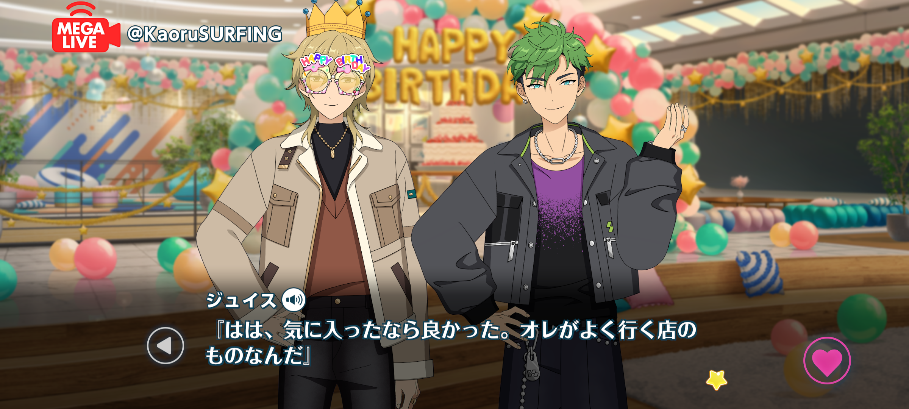

Kaoru Hakaze Birthday Livestream
Birthday Livestream

Kaoru: Kojika-san, thanks again for the gift earlier. The coffee and snacks were both delicious! ♪
Juis: Haha, I'm glad you enjoyed them. I got them from a shop I go to pretty often.
Kaoru: Oh, I see~. Well, if you're recommending it, I'll have to stop by sometime!
Juis: If you'd like, I'd be happy to take you there. It's a quiet place, and they have all sorts of coffee.
Kaoru: That sounds lovely. I'm always on the lookout for places like that, so I'd love to go! ♪
Juis: Of course. We can keep the birthday celebrations going, and I'll take you there sometime.